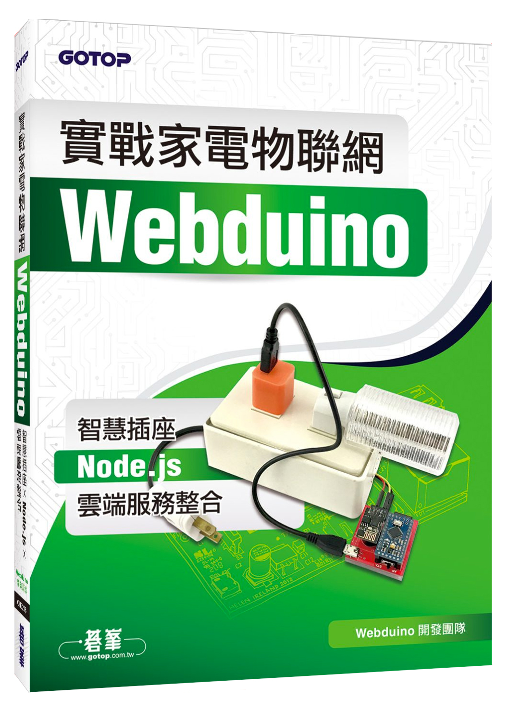

實戰家電物聯網：Webduino 智慧插座 x Node.js x 雲端服務整合
由 Webduino 開發團隊所撰寫的第二本書籍：「實戰家電物聯網：Webduino 智慧插座 x Node.js x 雲端服務整合」，由碁峰出版社出版，於 2017 年 5 月 31 號正式於博客來、天瓏等網路書店販售，以日常生活中常見的「插座」為主軸，藉由 Webduino 的輔助，「只用一個網頁」就能控制家裡的電器用品。
售價：
新台幣 380 元整 ( 訂價，折扣後實際價格以各網路書店為主 )
點選「立刻購買」，將會分別前往博客來、天瓏網路書店，歡迎政府機關、教育單位或公司行號採購，採購相關資訊請 來信 或來電 07-3388511 洽詢。
書籍大綱：
只要懂 HTML，您也能創造智慧家電。
在萬物都連網的今天，您是否曾經夢想過，「只用一個網頁」就能控制家裡的電器用品呢？本書以日常生活中常見的「插座」為主軸，藉由 Webduino 的輔助，除了可以讓插座搭配感測器控制之外，更能夠靈活結合常用的網路技術，讓插座不僅可以是智慧插座，更是「由網頁工程師所創造的 Modern Web 智慧插座」。
書籍章節：
- Chapter 01｜Web 工程師的物聯網
- Chapter 02｜Webduino 是什麼？能吃嗎？
- Chapter 03｜智慧插座的介紹與組裝
- Chapter 04｜使用網頁操控智慧插座
- Chapter 05｜你靠近我就開燈（超音波偵測距離）
- Chapter 06｜你關燈我就開燈（光感應小夜燈）
- Chapter 07｜你是「人」我就開燈（人體紅外線偵測）
- Chapter 08｜你拍拍手我就開燈（聲音偵測）
- Chapter 09｜用電視機遙控器開燈（紅外線發射器）
- Chapter 10｜按一下就開燈（按鈕開關）
- Chapter 11｜打造電流急急棒，碰三次就開燈！（開關應用）
- Chapter 12｜碰到水就開燈（土壤濕度偵測）
- Chapter 13｜用悠遊卡嗶一下就開燈（RFID）
- Chapter 14｜我說開燈就開燈（語音辨識）
- Chapter 15｜臉色發青就開燈｜人臉追蹤、顏色追蹤
- Chapter 16｜搖搖手機就開燈｜行動裝置陀螺儀、加速度計
- Chapter 17｜用網頁聊天室開關燈（聊天室原理篇）
- Chapter 18｜用網頁聊天室開關燈（前、後端實作篇）
- Chapter 19｜用 Google 試算表開關燈（儲存資料篇）
- Chapter 20｜用 Google 試算表開關燈（讀取資料篇）
- Chapter 21｜用 Google 地圖開關燈（地圖原理篇）
- Chapter 22｜用 Google 地圖開關燈（燈泡互動篇）
- Chapter 23｜用 Youtube 的魔術開關燈（影片互動篇）
- Chapter 24｜用 Opendata 開關燈（PM2.5 篇）
- Chapter 25｜用 Node-RED 開關燈（基礎操作篇）
- Chapter 26｜用 Node-RED 開關燈（Twitter 點燈篇）
- Chapter 27｜用 Node-RED 開關燈（Email 點燈篇）
- Chapter 28｜用日幣匯率開關燈（Node-RED 爬蟲應用篇）
- Chapter 28｜用日幣匯率開關燈（Node.js 爬蟲應用篇）
書籍封面：
